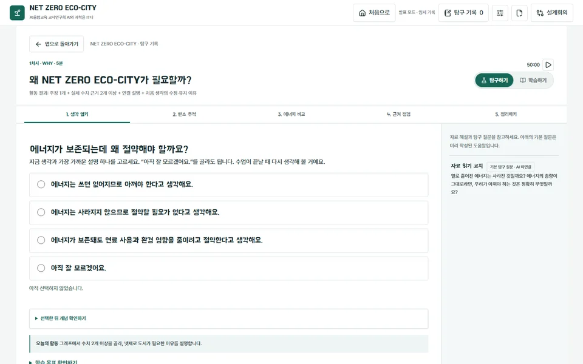
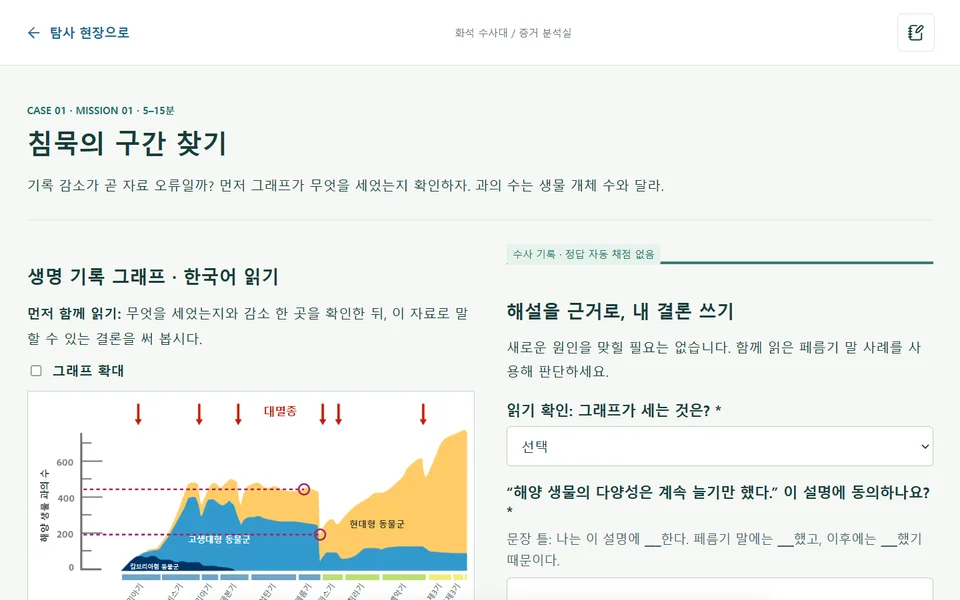

학교 수업 운영 매뉴얼
처음 적용하는 선생님을 위한 안내입니다.
준비부터 50분 수업 진행, 학생 기록 보관까지 차례로 확인해 주세요.
2026. 11. 06. 공개판 기준 · 고등학교 1학년 · 각 프로그램 4차시
자료 주소: https://scienceisjo.github.io/ai-science-it/hub.html
수업 전 준비
개인별 기기 또는 4인 모둠당 PC·태블릿 1대를 기준으로 운영할 수 있습니다. 교사용 화면을 띄울 디스플레이와 인터넷 연결, 학습지와 필기도구를 준비합니다. 학교의 실제 기기로 먼저 확인해 주세요.
이 점검표는 현재 브라우저에만 저장합니다. 초기화 버튼은 학생 학습 기록에 영향을 주지 않습니다.
외부 AI 도구는 별도로 준비합니다
기본 탐구와 모형 검토는 앱으로 진행할 수 있습니다. NET ZERO 4차시에서 AI 생성 3D 모델까지 비교하려면 담당 교사가 외부 도구 이용 조건과 계정을 확인하고 GLB 파일을 준비합니다. 파일이 없으면 기본 모형을 검토하고 AI 생성 검증은 미실시로 기록합니다.
접속과 첫 수업
- 교사는 설명자료를, 학생은 학습공간을 엽니다.
자료 모음에서 해당 프로그램의 ‘교사 설명자료’를 교사용 화면에 띄웁니다. 학생에게는 아래 학습공간 주소를 전달합니다. 교사용 ‘탐구 미리보기’와 ‘맵 보기’는 발표 모드이므로 학생 활동 링크로 배포하지 않습니다.
- 도입 3~5분 동안 임무와 자료 읽는 법을 설명합니다.
차시별 설명자료에서 질문, 자료 해설, 활동 순서를 보여 줍니다. 처음부터 긴 답을 요구하기보다 선택·관찰·자료 확인을 먼저 진행합니다. NET ZERO 1차시의 첫 생각은 선택형입니다.
- 이동과 상호작용을 짧게 연습합니다.
PC는 WASD 또는 방향키, 태블릿은 화면 방향 버튼을 사용합니다. NPC나 조사 지점 가까이에서 E 또는 화면의 대화·조사 버튼을 누릅니다. NET ZERO는 ‘크루즈’와 ‘다음 단계’, 화석 수사대는 ‘다음 장소’로 자동 이동할 수 있습니다.
- 탐구 페이지에서 자료를 보고 기록합니다.
맵에서 임무를 받은 뒤 ‘탐구 시작’으로 별도 탐구 화면에 들어갑니다. 조작이 어려우면 NET ZERO 1차시 탐구 또는 화석 수사대 1차시 탐구로 바로 시작할 수 있습니다. 이후 차시는 앱의 진행 순서를 따릅니다.
- 마지막에는 기록을 파일로 보관하고 제출합니다.
차시 끝 2~3분을 정리 시간 안에 확보합니다. 저장 파일을 내려받고 담당 교사가 정한 과제함에 제출했는지 확인합니다. 화면의 자동 저장 문구가 교사에게 제출됐다는 뜻은 아닙니다.


모둠 역할
NET ZERO는 자료 조사·비교 분석·설계 제안·근거 검증을, 화석 수사대는 표본 분석·시간 기록·환경 복원·증거 검증을 나누어 맡습니다. 차시마다 역할을 바꾸고 개인의 첫 생각과 수정 이유는 종이 또는 개인 기기에 별도로 작성하도록 안내합니다.
NET ZERO ECO-CITY
차시별 운영
도입 설명은 각 차시 첫 활동 시간에 포함합니다. 3차시는 건물 탐색 7분 중 3~5분을 도입으로 사용할 수 있습니다.
1차시 · 왜 넷제로가 필요할까?
비율과 절대량, 전력과 전체 에너지의 범위를 구분하고 자료를 근거로 넷제로의 필요성을 설명합니다.
생각 열기·도입 5분 / 탄소 추적 10분 / 에너지 비교 12분 / 근거 점검 10분 / 정리 13분
- 학생 활동
- 첫 질문은 자신의 생각과 가까운 선택지를 고릅니다. 그래프의 연도·단위를 확인하고 필요한 수치를 담은 뒤, 마지막에 처음 생각을 유지하거나 수정한 이유를 씁니다.
- 과제 산출물
- 수치 근거 2개 이상의 주장·근거·설명
- 교사 질문
- “두 수치의 연도와 단위가 같나요?”, “전력의 변화만으로 전체 에너지를 설명할 수 있나요?”
- 도움 제공
- 교사 설명자료에서 그래프 읽기를 먼저 보여 줍니다. 처음에는 “아직 잘 모르겠어요.”를 골라도 됩니다. 탐구 화면의 자료 해설과 문장 틀을 함께 사용합니다.
- 평가 시 확인
- 주장에 실제 수치와 출처가 연결되어 있는지, 처음 선택을 유지하거나 바꾼 이유가 있는지 확인합니다.
낮은 탄소집약도나 높은 재생에너지 비율 하나만으로 국가의 넷제로 달성을 판단하지 않습니다.
2차시 · 실제 도시는 무엇을 바꿀까?
도시 자료와 정책을 연결하고 다른 도시에 적용할 조건과 시민별 편익·부담을 설명합니다.
첫 판단·도입 5분 / 배출 추이 10분 / 부문 비교 12분 / 정책 검증 10분 / 사례 카드 13분
- 학생 활동
- 도시 한 곳을 골라 두 시점의 배출과 부문 자료를 조사합니다. 공식 정책과 대조한 뒤 우리 도시에 가져올 정책과 추가 확인 사항을 정합니다.
- 과제 산출물
- 문제·증거·정책·한계가 담긴 도시 사례 카드
- 교사 질문
- “정책 말고 배출량을 바꿀 요인은 없을까요?”, “이 정책을 이용하기 어려운 사람은 누구일까요?”
- 도움 제공
- 한 도시 안의 변화부터 비교합니다. 목표와 실적, 통행 비율과 배출량의 차이를 예로 설명하고 사례 카드의 항목을 하나씩 작성합니다.
- 평가 시 확인
- 관찰한 감소와 예상하는 효과를 구별하는지, 정책의 적용 조건과 시민 부담을 적었는지 확인합니다.
정책 시행 뒤 배출이 줄었다는 사실만으로 그 정책의 인과 효과를 확정하지 않습니다.
3차시 · 에너지 제로이면 탄소도 제로일까?
하루 에너지 수지와 시간별 부족량을 구분하고, 바꿀 변인과 고정할 조건을 정해 비교합니다.
건물 탐색·도입 7분 / 에너지 수지 12분 / 효율 실험 10분 / 탄소 확장 8분 / 계획 수립 13분
- 학생 활동
- 먼저 결과를 예상합니다. 같은 날짜와 태양광 조건에서 수요 감소율만 바꾼 두 실험을 저장하고, 차이를 설명한 뒤 도시계획 초안을 작성합니다.
- 과제 산출물
- 예상·A/B 비교 실험·도시설계 초안
- 교사 질문
- “A와 B에서 무엇을 고정했나요?”, “낮에 남은 전기를 밤에 쓰려면 무엇이 필요할까요?”
- 도움 제공
- kW와 kWh를 간단한 사용 시간 예로 설명합니다. 먼저 낮 한 구간과 밤 한 구간을 읽고 하루 합계로 넓힙니다.
- 평가 시 확인
- 예상과 실제 계산 결과를 비교했는지, 한 변인만 바꾸었는지, 모형 밖의 조건을 설명했는지 확인합니다.
학생이 입력한 감소율은 실측 공사 효과가 아닙니다. 하루 발전량과 소비량이 같아도 매 시간 전력이 충분한 것은 아닙니다.
4차시 · 도시 설계를 데이터로 검증하자
자원 제약 안에서 두 대안을 비교하고 설계의 근거, 부담, 불확실성과 수정 이유를 설명합니다.
기록 검토·도입 5분 / 정책 비교 12분 / 프롬프트 10분 / 도시 구현 10분 / 검증·발표 13분
- 학생 활동
- 앞선 차시의 근거로 우선순위를 정합니다. 자원 8점 안의 다른 두 조합을 비교하고, 계획과 프롬프트와 3D 모형을 대조해 수정합니다.
- 과제 산출물
- 두 정책 조합·도시 제안서·3D 검토 기록
- 교사 질문
- “탄소 계산값이 더 작으면 누구에게나 더 좋은가요?”, “모양만 보고 확인할 수 없는 성능은 무엇인가요?”
- 도움 제공
- 외부 AI 모델이 없으면 앱의 기본 배치 모형으로 설계를 검토합니다. 외부 AI 생성 검증은 미실시로 기록하고 핵심 탐구 기록은 별도로 보존합니다.
- 평가 시 확인
- 두 대안의 조건이 실제로 다른지, 근거가 계획에 반영됐는지, 누락·한계와 수정 이유를 발표했는지 확인합니다.
자원 8점은 실제 예산이 아니며 감축률은 수업용 가정입니다. 이 모형은 GDP나 실제 도시의 미래를 예측하지 않습니다.
화석 수사대
차시별 운영
각 차시는 교사 도입 5분과 탐구 활동 45분으로 구성합니다. 어려운 그래프·시간 비율은 교사 설명자료의 해설을 먼저 보여 주세요.
1차시 · 다섯 번의 침묵
해양 생물 과의 수 그래프에서 변화를 읽고, 대멸종 원인 가설을 증거와 함께 검토합니다.
도입 5분 / 그래프 10분 / 가설 12분 / 증거 검토 15분 / 보고 8분
- 학생 활동
- 그래프 해설로 축과 감소 구간을 확인합니다. 다섯 사건의 가설을 검토하고 한 사건의 근거와 한계를 심사한 뒤 모둠의 잠정 설명을 보고합니다.
- 과제 산출물
- 사실·가설·추가 확인 사항을 적은 사건 기록지
- 교사 질문
- “그래프에서 직접 본 사실은 무엇인가요?”, “그 사실만으로 원인도 알 수 있을까요?”
- 도움 제공
- 교사 설명자료의 한국어 그래프 해설을 먼저 보여 줍니다. 학생은 제공된 해석을 읽고 사실·설명·아직 모르는 점을 나누어 결론을 씁니다.
- 평가 시 확인
- 과의 수를 개체 수로 해석하지 않는지, 감소 관찰과 원인 가설을 구별하는지 확인합니다.
그래프에는 5대 대멸종 외의 감소 화살표도 있습니다. 화살표 개수와 대멸종 수를 같다고 가르치지 않습니다.
2차시 · 시간이 뒤섞인 방
시대의 순서와 지속 시간의 차이를 이해하고, 화석이 시간과 환경 중 어떤 질문의 근거인지 설명합니다.
도입 5분 / 화석 자료 10분 / 시간 비율 12분 / 단서 분류 15분 / 보고 8분
- 학생 활동
- 화석 사진과 복원 그림을 구별합니다. 주어진 비율로 100cm 시간 띠를 구성하고, 화석을 시간·환경 단서로 사용할 때 필요한 조건을 검토합니다.
- 과제 산출물
- 100cm 시간 띠·화석 분류 근거표
- 교사 질문
- “시대의 순서가 맞으면 길이도 맞는 건가요?”, “이 화석으로 언제와 어떤 환경 중 무엇을 설명하려고 하나요?”
- 도움 제공
- 100cm 종이 띠와 자를 준비하면 비율을 직접 확인할 수 있습니다. 앱의 길이 안내를 읽고 계산과 배치를 차례로 확인합니다.
- 평가 시 확인
- 네 시대를 똑같은 길이로 처리하지 않는지, 분류 이유와 알 수 없는 점을 함께 설명하는지 확인합니다.
같은 크기의 게임 맵은 시대의 지속 시간을 나타내지 않습니다. 앱의 비율은 수업 시나리오의 반올림 값입니다.
3차시 · 표본실의 거짓말
사진에서 확인한 특징을 관찰 문장으로 쓰고, 복원에 덧붙인 설명을 근거와 대조합니다.
도입 5분 / 관찰 훈련 5분 / 네 표본 20분 / 비교 12분 / 수정 8분
- 학생 활동
- 네 표본을 관찰하고 스케치합니다. 개인은 한 표본을 자세히 기록합니다. 화석과 복원 모형을 비교하고 오류가 있는 설명을 근거에 맞게 수정합니다.
- 과제 산출물
- 모둠 네 표본 관찰·개인 상세 표본·복원 검증
- 교사 질문
- “사진의 어느 부분을 보고 쓴 문장인가요?”, “사진에 보이지 않는 뒷면이나 색도 관찰했다고 쓸 수 있나요?”
- 도움 제공
- 교사가 마디·무늬·배열 중 하나를 짚어 관찰 문장을 시범 보입니다. 관찰용 종이를 함께 쓰고 모둠 역할을 순환합니다.
- 평가 시 확인
- 직접 보이는 특징과 추론을 구별하는지, 수정 문장에 근거가 연결되는지 확인합니다.
네 사진은 같은 시기·장소에서 함께 발견된 표본 묶음이 아닙니다. 이야기 그림과 장식용 3D 객체를 표본 증거로 사용하지 않습니다.
4차시 · 지구의 기억을 연결하라
시간상 이어진 두 시대의 환경과 생물 변화를 연결하고, 인과 설명의 근거와 다른 가능성을 검토합니다.
도입 5분 / 기록 통합 12분 / 변화 연결 12분 / 동료 검토 8분 / 개요 10분 / 정리 3분
- 학생 활동
- 앞선 기록을 통합해 두 시대의 환경과 생물을 연결합니다. 이웃 모둠의 질문을 받아 수정하고 개인 보고서의 서론·본론·결론을 설계합니다.
- 과제 산출물
- 모둠 환경 복원지도·개인 보고서 설계도
- 교사 질문
- “앞뒤에 일어났다는 사실 외에 어떤 연결 근거가 있나요?”, “그 설명을 확인하려면 어떤 자료가 더 필요할까요?”
- 도움 제공
- 이전 차시의 기록과 문장 틀을 다시 엽니다. 자료가 없는 연결은 확정하지 않고 추가 확인이 필요하다고 적습니다.
- 평가 시 확인
- 환경이 생존 조건을 어떻게 바꾸는지 설명하는지, 연결마다 출처·근거·한계가 있는지 확인합니다.
시대 전체를 하나의 기후로 일반화하지 않습니다. 최종 수행평가의 세부 기준은 담당 교사가 사전에 안내합니다.
저장·제출·이어하기
같은 기기, 같은 브라우저에서 이어집니다
공개판은 브라우저 안에 기록을 저장합니다. 학번·이름으로 다른 기기에서 자동 복구되는 방식은 아닙니다. 시크릿 창 종료나 브라우저 데이터 삭제로 기록을 잃지 않도록 차시마다 파일을 내려받아 주세요.
| 할 일 | NET ZERO ECO-CITY | 화석 수사대 |
|---|---|---|
| 파일로 보관 | 상단 ‘탐구 기록’ → ‘전체 기록 저장’ | 상단 ‘수사 기록’ → ‘기록 내보내기’ |
| 다른 기기로 이동 | 탐구 기록 창의 ‘기록 불러오기’에서 JSON 선택 | ‘탐사 설정’의 ‘기록 가져오기’에서 JSON 선택 |
| 읽기용 제출본 | ‘결과 보고서’에서 보고서 내려받기 또는 인쇄 | ‘수사 기록’의 ‘인쇄’에서 PDF로 저장 |
| 3D 파일 보관 | 생성 모델 GLB는 기록 JSON과 별도로 보관 | 관찰 스케치는 기록 JSON에 포함 |
- 차시가 끝나면 JSON을 먼저 내려받습니다.
기록 파일은 다음 차시의 이어하기와 복구에 사용합니다. 다른 프로그램의 기록 파일을 서로 바꾸어 불러오지 않습니다.
- 교사가 정한 제출 경로로 전달합니다.
예: ‘생태도시_2모둠_1차시.json’. 실명을 파일명에 넣지 않고 학교 LMS·과제함에 제출합니다. 교사는 읽기용 보고서나 PDF도 함께 받을 수 있습니다. 공개 게시판에 학생 답변 파일을 올리지 않습니다.
- 기기를 바꾸면 기존 기록을 먼저 보관합니다.
가져오기는 현재 브라우저의 기록을 바꿀 수 있습니다. 현재 기록을 내려받은 뒤 올바른 프로그램에서 불러오고, 앞선 답변과 진행 상태를 확인합니다.
기기를 여러 학급이 함께 쓸 때
같은 브라우저 프로필을 이어 쓰면 다른 모둠의 답변이 보일 수 있습니다. 가능하면 모둠별 브라우저 프로필을 사용하고 같은 기기를 배정합니다. 공용 기기를 재사용할 때는 제출 파일을 확인한 뒤 학교의 기기 관리 방식에 따라 이전 기록을 정리합니다. ‘처음으로’는 기록 삭제 버튼이 아닙니다.
교사 미리보기와 학생 활동을 구별해 주세요
허브의 차시별 미리보기는 발표용 임시 기록을 사용합니다. 학생의 학습 기록과 연결되지 않으며 창을 닫은 뒤 이어하기를 보장하지 않습니다. 교사는 수업을 준비할 때 미리보기를, 학생은 정상 학습공간을 사용합니다.
평가와 연구 기록
이동 속도, 이야기 보상, 활동 완료 표시로 과학적 이해를 판단하지 않습니다. 학생이 쓴 근거와 비교 조건, 설명을 바꾼 이유를 확인합니다. 아래 항목은 수업 중 확인 예시이며 학교의 확정 평가 루브릭을 대신하지 않습니다.
| 항목 | 확인 예시 | 짧은 되묻기 |
|---|---|---|
| 자료 해석 | 단위·연도·범위, 사진에서 직접 보이는 특징 | “어디에서 확인했나요?” |
| 근거 연결 | 수치·관찰 사실이 주장과 연결된 문장 | “이 자료가 왜 그 설명을 지지하나요?” |
| 조건과 한계 | 고정 변인, 적용 조건, 모형 밖의 요인, 다른 설명 | “조건이 달라지면 어떨까요?” |
| 검토와 수정 | 처음과 최종 판단, 유지·수정 이유, 동료 질문 | “무엇을 보고 생각을 고쳤나요?” |
연구 적용 시 별도로 준비할 자료
연구회에서 확정한 사전·사후 검사와 루브릭, 학교의 연구 운영 안내를 별도로 준비합니다. 비교집단을 운영한다면 같은 자료·과제·활동 시간과 교사 안내를 적용하고, 기기 문제나 힌트 제공 등 수업 조건의 차이를 기록합니다.
현재 공개판은 검사·집단 배정·학급 기록 수집을 자동으로 통제하지 않습니다. 생성형 AI가 연결되지 않은 상태의 결과를 생성형 AI 대화의 효과로 해석하지 않습니다. 학생 파일 수집과 보관은 학교의 연구·개인정보 처리 절차를 따릅니다.
다른 학교의 수정 의견 전달
프로그램명, 차시와 활동 이름, 사용 기기, 기대한 동작과 실제 상황을 적어 연구회에 전달해 주세요. 화면을 첨부할 때는 학생 이름과 답변이 드러나지 않도록 가립니다.
현재 기능 범위
| 기능 | 사용 상태와 운영 방법 |
|---|---|
| 4차시 학습공간 | 두 프로그램 모두 제공. 맵 이동, 임무 안내, 별도 탐구 페이지를 사용합니다. |
| 설명자료·해설 | 각 차시 교사 도입 자료와 학생 탐구 도움말을 제공합니다. |
| 기록 저장 | 현재 브라우저에 저장. JSON으로 내보내고 가져올 수 있습니다. |
| 탐구 코치 | 미리 작성한 질문 제공. 실시간 생성형 AI 대화는 연결 전입니다. |
| 학급 자동 수집 | 공개판에서는 미연결. 학교가 정한 제출 경로로 파일을 받습니다. |
| 참여코드·검사 통제 | 공개판에서는 미연결. 연구용 운영 환경과 별도 구성이 필요합니다. |
| 온라인 멀티플레이 | 미연결. 모둠 토론과 동료 검토는 교실에서 진행합니다. |
| AI 생성 3D 모델 | NET ZERO에서 준비한 GLB를 가져와 검토할 수 있습니다. 외부 생성과 비용·계정은 별도입니다. |
자료에 포함된 그래프·사진의 출처와 이용 조건은 각 화면에서 확인할 수 있습니다. 이야기 삽화와 맵은 수업 맥락을 위한 표현이며 관찰 증거나 성능 검증 자료로 사용하지 않습니다.
수업 중 문제가 생기면
맵이 느리거나 3D 화면이 열리지 않습니다.
화석 수사대는 ‘탐사 설정 → 그래픽 → 경량’을 선택하고 환경 움직임을 끌 수 있습니다. 이동이 어려우면 교사가 맵을 보여 주고 학생은 같은 탐구 페이지에서 활동하도록 운영합니다. 맵 대신 탐구 링크를 열어도 자료와 과제는 같습니다.
다음 차시가 열리지 않습니다.
NET ZERO 학생 화면은 앞선 차시의 완료 상태를 확인합니다. 필수 답변과 근거·비교 실험 등 화면에 표시된 조건을 확인하고 차시를 마칩니다. 교사는 허브의 ‘탐구 미리보기’로 준비할 수 있지만, 학생 기록을 이어 쓰는 링크로 바꾸어 안내하지 않습니다.
다시 접속했는데 기록이 없습니다.
같은 기기와 브라우저 프로필인지, 시크릿 모드나 교사 미리보기였는지 확인합니다. 저장해 둔 JSON이 있으면 해당 프로그램에서 가져옵니다. 브라우저 기록이 삭제되고 보관 파일도 없다면 공개판에서 서버 복구를 할 수는 없습니다.
코치가 내 질문에 새 답을 만들지 않습니다.
현재 코치는 미리 작성한 자료 해설과 탐구 질문입니다. 학생 입력에 맞춰 대화하는 생성형 AI는 아직 연결되어 있지 않습니다. 코치의 질문을 바탕으로 교사나 동료와 설명을 비교하도록 안내합니다.
화석 그래프를 읽기 어려워합니다.
화석 1차시 교사 설명자료에서 세로축이 ‘해양 생물 과의 수’라는 점과 가로축의 시간 방향을 먼저 설명합니다. 한국어 해설을 함께 읽고, 학생은 감소 전후의 변화와 자료만으로 확정할 수 없는 점을 정리하게 합니다. 과의 수를 생물 개체 수로 바꾸어 설명하지 않습니다.
학습 활동이 50분 안에 끝나지 않습니다.
다음 차시 전 기록을 먼저 보관합니다. 이동 연습이나 이야기 다시 보기를 줄이고 자료 비교·설명·수정 시간을 확보합니다. 모둠에서 읽기·자료 찾기·입력 역할을 나누되 각 학생의 판단을 별도로 확인합니다. 어떤 활동을 다음 시간으로 넘겼는지 교사 기록에 적습니다.
외부 AI 모델 생성이 늦어집니다.
기본 3D 배치 모형으로 계획의 위치·구조·누락을 검토합니다. 외부 AI 모델을 비교하지 않았다면 AI 생성 검증을 완료했다고 처리하지 않습니다. 설계 근거와 비교 실험 기록은 따로 저장하고 추후 생성 모델과 대조할 수 있습니다.
다른 학교 자료로 바꾸거나 자료를 재배포하고 싶습니다.
현재 공개 링크를 학교 수업에 안내할 수 있습니다. 그래프·사진·폰트 등 개별 자료에는 각 출처의 이용 조건이 적용됩니다. 원본 자료를 다시 배포하거나 연구용으로 수정해 운영하려면 해당 조건과 연구회 운영 안내를 확인해 주세요.